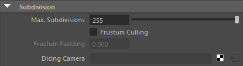
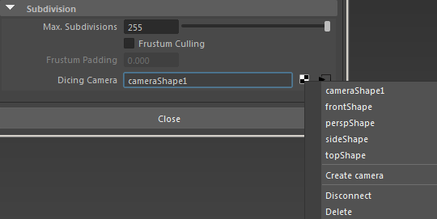

细分
 请参见《Arnold 用户手册》中的渲染设置
请参见《Arnold 用户手册》中的渲染设置

这些设置控制 Arnold 对细分曲面的细分。请注意，除了下文所述的全局细分控件之外，您还可以通过属性编辑器上的 Arnold 设置来控制单个对象的细分。在 Maya 中选择相关的几何体对象，转到属性编辑器，向下滚动并展开“Arnold”组，为“细分迭代”(Subdivision Iterations)选择适当的值（还有一些可用于按对象细分的控件）。每个对象的实际细分数量将是这两个值中的较小值。

“渲染设置”(Render Settings)的“Arnold 渲染器”(Arnold Renderer)选项卡中的“细分”(Subdivision)部分的“切割用摄影机”(Dicing Camera)菜单